TRADIZIONI E ORIGINI
Gli Ostrogoti, secondo le loro tradizioni erano originari dell'attuale isola svedese di Gotland e della regione di Götaland.
Nel 250 si divisero dai Visigoti e nacque il regno ostrogoto.
Il primo re si chiamava Ostrogota ed era della stirpe degli Amali.
Nel 251 gli Ostrogoti uccisero l'imperatore Decio, più tardi saccheggiarono alcune isole dell'Egeo e conquistarono la Tracia e la Mesia.
Dopo una battaglia contro i romani, l’imperatore Claudio II costrinse il popolo ostrogoto a migrare dalla Scandinavia al nord del Mar Nero dove fondarono il Regno Ostrogoto.
Intorno al III e IV secolo, il regno ostrogoto espanse la sua egemonia conquistando un territorio che partiva dalla Grecia e arrivava fino al mar Baltico.
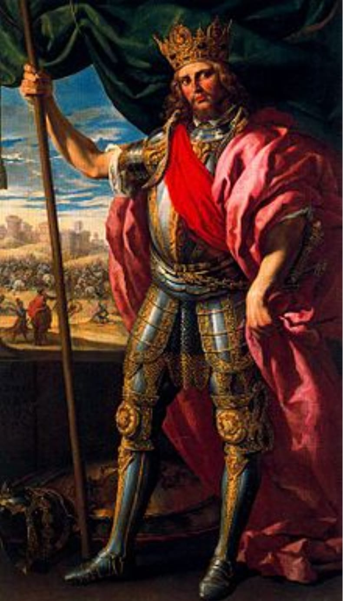
OSTROGOTI E UNNI
Intorno al IV secolo, gli Ostrogoti furono incalzati dagli Unni facendoli allontanare dalla loro regione d'insediamento tra il Danubio e il Mar Nero.
L'imperatore Valente accettò di accogliere le popolazioni barbare come foederati, allo scopo di rafforzare il proprio esercito e per aumentare la base imponibile del fisco.
Gli Ostrogoti chiesero pressantemente asilo a Valente, accalcandosi ai confini dell'Impero, precisamente lungo il Danubio.

OSTROGOTI IN ITALIA
Il periodo compreso tra il 477 e il 483 l’impero
ostrogoto vide varie lotte a tre tra
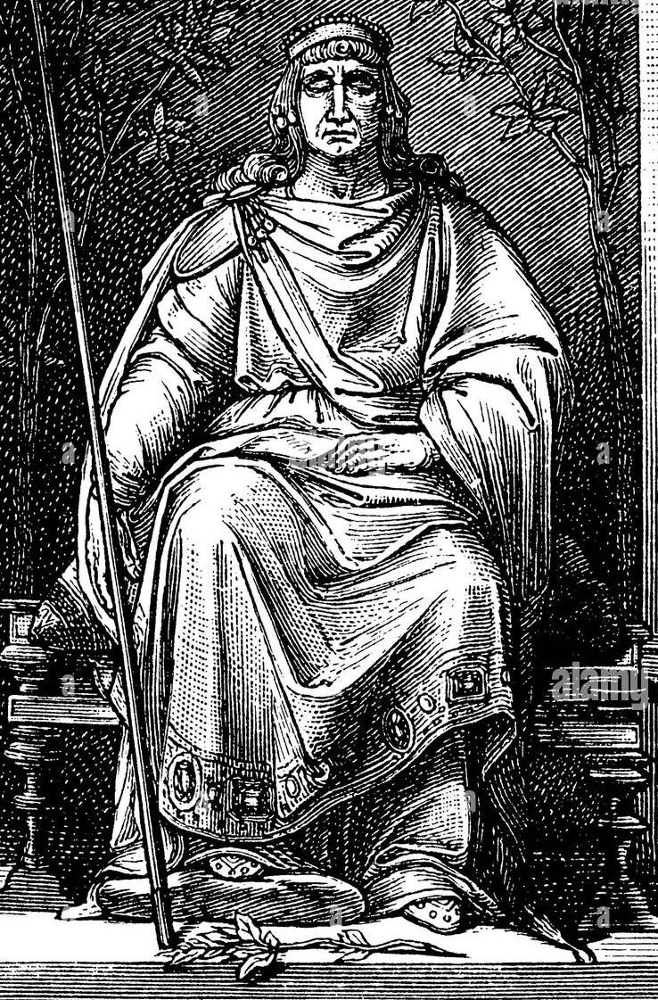
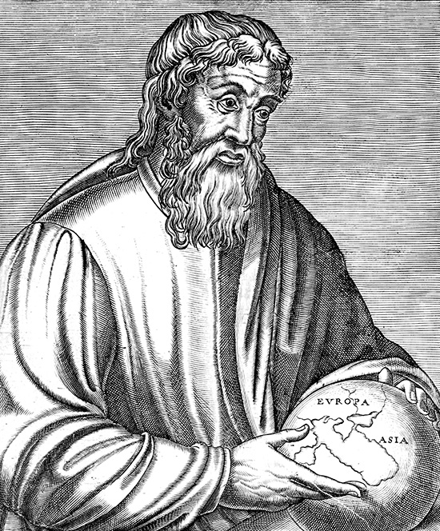
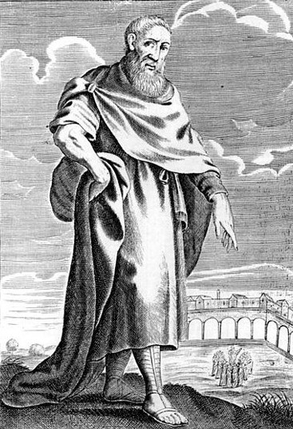
Teodorico Flavio sovrano Ostrogoto
Teodorico Strabone politico Goto
Zenone di Elea imperatore bizantino
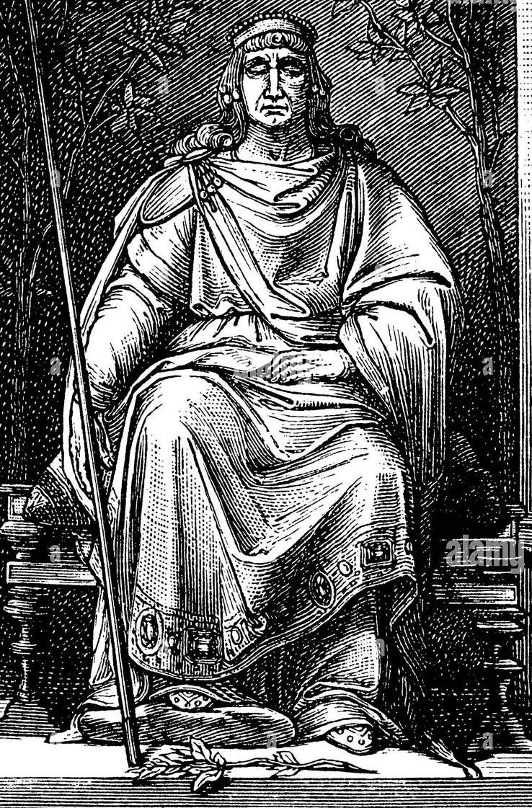
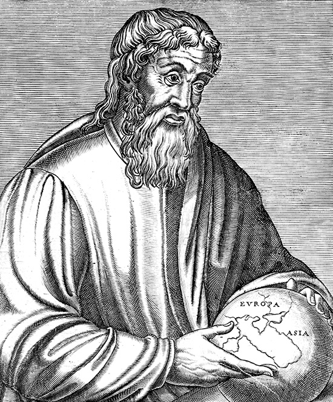
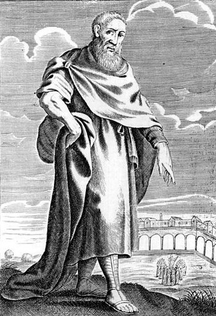
Teodorico Flavio sovrano Ostrogoto
Teodorico Strabone politico Goto
Zenone di Elea imperatore bizantino
Alla fine di queste battaglie che si conclusero
con la morte di Strabone,
l’imperatore Zenone siglò un patto con teodorico,
invitandolo a invadere l'Italia in suo nome per
scacciare il re degli Eruli Odoacre che,
dopo aver deposto l'ultimo imperatore romano
d'Occidente Romolo Augustolo (476) ed
essersi proclamato Rex Italiae,
amministrava la penisola in totale autonomia
(Zenone intendeva riconquistare l'Occidente,
in mano ai barbari.
L'imperatore era preoccupato
dall'intraprendenza di Odoacre, che aveva saputo governare
in modo da non urtare la suscettibilità dei Latini e da estendere i confini del suo regno).
Questa battaglia Teodorico contro Odoacre,
portò alla vittoria degtli ostrogoti anche
con l’aiuto dei Visigoti giunti dalla Spagna.
Gli Ostrogoti costituirono un nuovo
regno romano-barbarico in Italia, che si estendeva
fino alla Pannonia a nord est e alla Provincia (l'odierna Provenza) a nord ovest.

LA CADUTA DELL' IMPERO OSTROGOTO
Dopo la morte di teodorico l’impero
ostrogoto iniziò a disgregarsi a
causa di un erede forte e delle alleanze
formate dalla nobiltà gota.
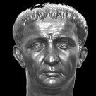
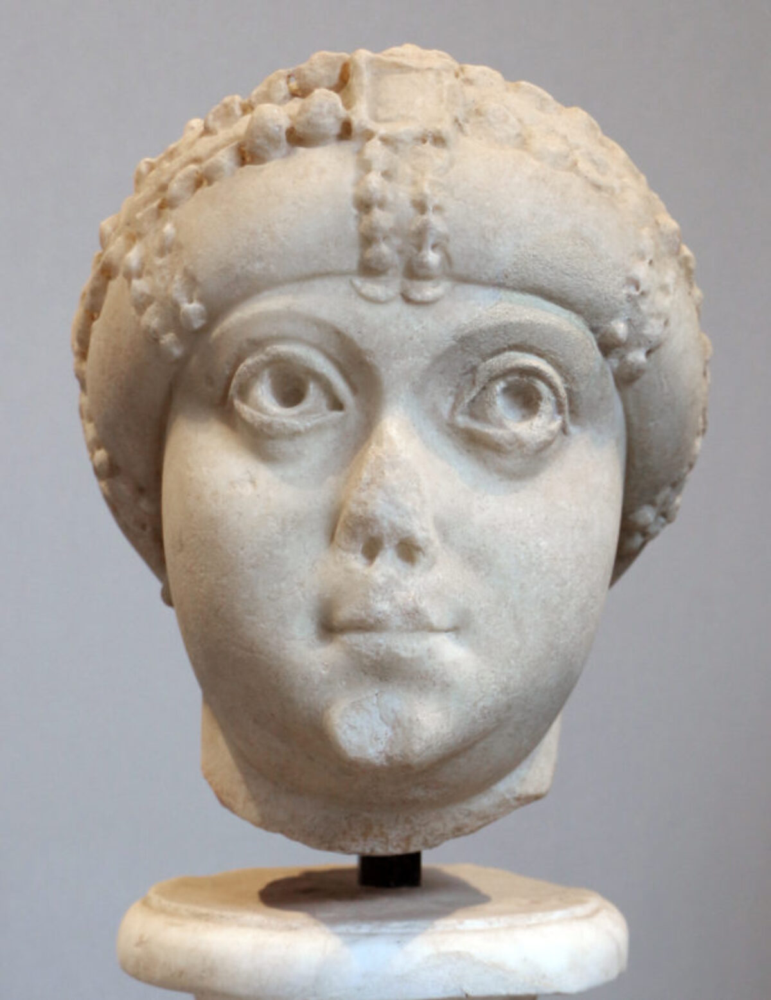
Atalarico divenne il nuovo re e sua madre,
Amalasunta, sua reggente.
La nobiltà gota non sopportava una
donna come reggente e la iniziarono ad educare
secondo le usanze del loro popolo.
Atalarico morì presto e sua madre sposò
Teodato che la uccise.
Questo scatenò la “casus belli” che permise
a Giustiniano di invadere l’Italia,
che con anche i Franchi e i Burgundi,
pose fine all’impero ostrogoto.
ARCHITETTURA
A causa della breve storia del regno,
l'arte di Ostrogoti e Romani non subì una fusione.
Sotto il patrocinio di Teodorico e Amalasunta, comunque,
vennero svolti numerosi restauri di edifici dell'antica Roma.
A Ravenna vennero costruite nuove chiese ed edifici monumentali,
molti dei quali sono tuttora in piedi.
La Basilica di Sant'Apollinare Nuovo,
il suo battistero, e la Cappella Arcivescovile seguono uno stile architettonico tardo romano,
mentre il Mausoleo di Teodorico mostra elementi puramente gotici,
tipo il mancato uso di mattoni a cui vennero preferiti blocchi di calcare istriano,
o il tetto in monoblocco di pietra da 300 tonnellate.
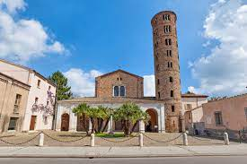
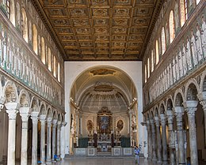
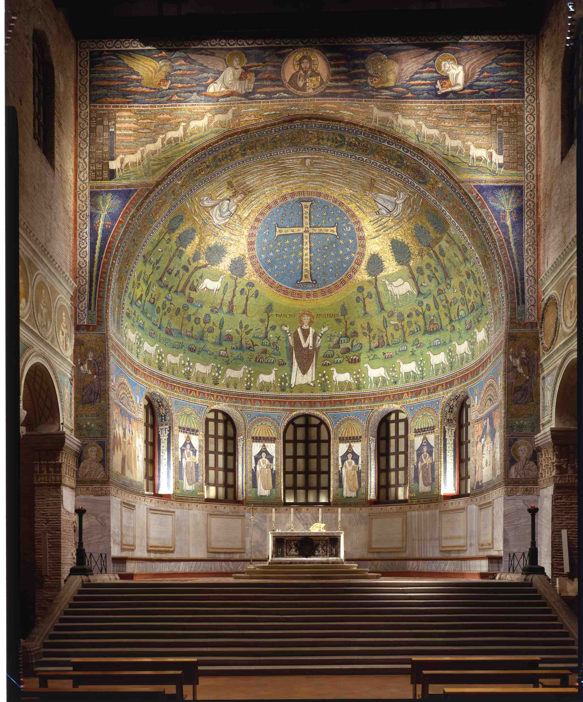
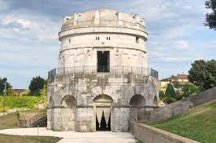
LETTERATURA
Buona parte dei lavori di letteratura gotica (redatti durante il regno ostrogoto) sono in lingua latina, nonostante alcuni dei più vecchi siano stati tradotti in greco e in gotico (ad esempio il Codex Argenteus).